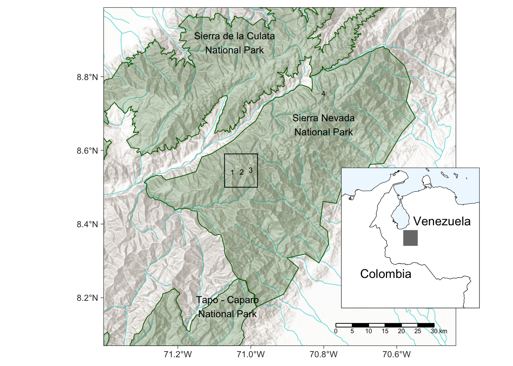

2 Spatial distribution
The Tropical glacier ecosystem of the Cordillera de Mérida included at least five occurrences of glaciers or ice patches in the Sierra Nevada de Mérida and one in the Sierra de Santo Domingo, but is currently represented by a single ice mass in the former range.
Available global data of glacier extent overestimates its distribution in the Cordillera de Mérida. The Randolph Glacier Inventory version 6.0 (Randolph Glacier Inventory Consortium, 2017) includes glacier outlines for the Humboldt and Bolivar Peaks shown in Figure 2.1. These outlines were digitised between 2000 and 2003 but do not include ground calibration and appear to overestimate the extent of the glaciers at that point in time.
The changes in occurrence and extent of the glacier and ice fields in the Cordillera de Mérida have been described by Braun & Bezada (2013) and Ramírez et al. (2020) based on measures on the ground or estimated from cartographic and remote sensing analysis. The extent of the current single occurrence is less than 1 \(km^2\) and can be seen in recent satellite imagery Figure 2.2.